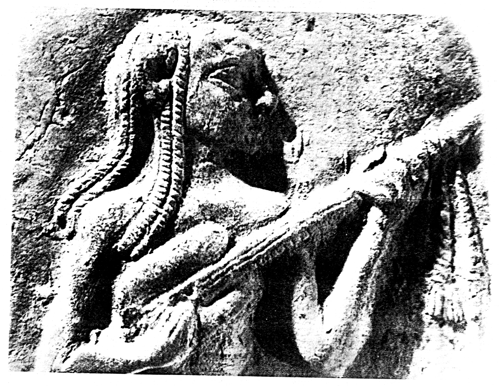

Welcome to my website
in this place you will find many interesting guitar-related things
🎸
Learn about guitar:
Guitar history in nutshell
The guitar has a long history, going back to ancient times. Early versions of guitar-like instruments were found around 3,000 BCE in Mesopotamia. The guitar we know today started to develop in Spain in the 1500s, influenced by older instruments like the lute. By the 1700s, the six-string classical guitar became popular in Europe. In the 1900s, electric guitars appeared, first used in jazz and then rock ‘n’ roll, which made the guitar a key instrument in modern music. Now, guitars are popular in many styles of music worldwide.
